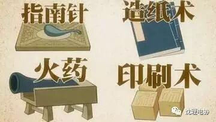
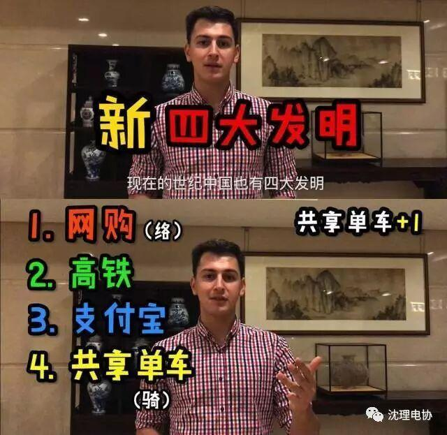

新“四大发明”出炉啦！
点击蓝字

关注我们
众所周知，我国的四大发明，在人类科学文化史上留下了灿烂的一页。这些伟大的发明曾经影响并造福于全世界，推动了人类历史的前进。
四大发明
四大发明是关于中国科学技术史的一种观点，是指中国古代对世界具有很大影响的四种发明，是古代中华民族劳动人民的重要创造，是指造纸术、指南针、火药及印刷术。

尽管中华文明有很多重要的成就都以“四大”“五大”等命名，但四大发明的概念却来源于西方学者，并在之后被中国人接受。
四大发明是中国古代先民为世界留下的一串光耀的足迹，是人类文明进步作出巨大贡献的象征
然鹅！
今天，小编要跟大家分享的并不是这些，而是最近被国外友人们评选出的新“四大发明”

xx记者

你最想把中国的什么带回祖国？
网购啊！我在淘宝买东西、上饿了么，直接送到家里。
如果欧洲有这样的东西，非常方便。
我淘宝上买东西，过了两个星期，老板打电话让我给评价。
在欧洲，买了东西就没有人理我。
最重要的是，在屋里不想出去的话，在网上就可以点外卖！！


友人A
我在中国坐过高铁，在去佛山和一些外面的城市我们是坐高铁去的。
高铁是清洁、快速和很有效率的。
希望我们国家可以有更完善的交通系统

友人B
有一次回家，和朋友出去玩发现自己没有带现金，结果很尴尬……
现在，我从来都不用带手包或者钱包，从来不用，我只要带我的手机，就能支付所有的东西。我也想把这些支付方式带回印度。


友人C
像OFO还有其他共享单车，它们也很方便，因为有时候你打不到的士或其它车。


友人D


xx记者
看到了么，童鞋们，别小看你每天习以为常的高铁、支付宝、共享单车、网购，
这可都是别的国家青年梦寐以求想要带回去的“四大发明”！
信息部——王 喆
～求关注

全心全意为人民服务
长按扫码即可关注